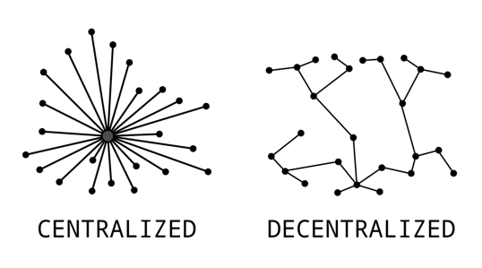

07-08. The Internet and the World Wide Web
Info
- Nilufar Ismayilova, Rumiyya Alili, Ismayil Shahaliyev
- Nov 21 2025 / Dec 23 2025
The Internet
The Internet is a global network of interconnected computer networks that allows devices around the world to communicate. It is not controlled by any single organization; instead, many independent networks—such as home networks, university networks, company networks, and government networks—connect to each other voluntarily. Together, these connections form a large, decentralized system that enables information to travel quickly and reliably between distant points.
For communication to be possible across such a system, all connected devices must follow common rules. These rules are called network protocols. A protocol defines how data is sent, in what format, in what order, and what happens if errors occur. Without protocols, networks could be physically connected, but devices would not understand each other.
The Internet follows a hierarchical structure. Local networks connect to Internet Service Providers (ISPs), which then connect to larger regional networks and finally to high-speed backbone networks that carry data across countries and continents. When you open a website or send a message, your data travels through this chain of networks according to agreed-upon protocols until it reaches its destination.
Internet Protocol Suite
The Internet Protocol Suite, commonly known as TCP/IP, is the foundational set of communication rules that defines how data is prepared, addressed, transmitted, and received across the Internet. It organizes network communication into layers, where each layer performs a specific part of the process.
At the core is the Internet Protocol (IP), which assigns addresses to devices and routes data packets from the sender to the correct destination, even if they pass through many different networks. Above IP, the suite includes transport protocols that manage how data is broken into smaller pieces, how those pieces travel, and how they are reassembled when they reach the receiver.
TCP (Transmission Control Protocol) and UDP (User Datagram Protocol) are the two main transport protocols. TCP provides reliable, ordered, error-checked delivery. It establishes a connection, confirms delivery, and retransmits lost packets. TCP is used when accuracy matters, such as loading websites, sending emails, or downloading files. UDP is faster but does not provide guaranteed delivery or ordering. Lost packets are not retransmitted. UDP is used for real-time applications where speed matters more than perfect accuracy, such as video calls, online gaming, and live streaming.
Note
When you visit a website, your request is divided into packets and routed across multiple networks to the server’s IP address. Because web traffic uses TCP, packets are delivered reliably and reassembled in order. In a video call, UDP may be used instead to avoid delays caused by retransmissions.
IP Address
IP addressing uniquely identifies devices on a network so routers know where to deliver packets. An IP address functions like a postal address: it identifies the destination and the sender.
IPv4 uses 32 bits, written as four decimal numbers separated by dots, such as 192.168.1.4. IPv6 uses 128 bits, written as hexadecimal blocks separated by colons, such as 2001:db8:85a3::8a2e:370:7334. IPv6 was introduced because the IPv4 address space is too small for the number of modern devices.
Exercise. How many unique addresses are possible with IPv4? What about IPv6?
Domain Name System
The Domain Name System (DNS) translates human-readable domain names into IP addresses. Without DNS, users would have to memorize numerical IP addresses for websites.
DNS is hierarchical. At the top is the root domain (.), usually hidden. Under it are top-level domains (TLDs) such as .com, .az, .org. Under each TLD are second-level domains such as edu.az. Subdomains further divide these, such as ada.edu.az or library.ada.edu.az.
Note
When you type www.ada.edu.az, your computer asks DNS for the IP address. DNS returns the IP, and the browser connects to that server. This lookup happens automatically in the background.
Routing
Routing is the process by which routers determine paths for data packets to travel across networks from source to destination. Internet traffic usually passes through multiple routers, and each router decides where to send the packet next.
Static routing is configured manually. It is predictable and simple but does not adapt if a link fails.
Default routing sends any unknown destination to a single next-hop router. Home networks often use default routing to send all external traffic to the ISP.
Dynamic routing uses protocols that let routers exchange information and update routes automatically based on network conditions. This is essential for large networks and the Internet backbone.
Note
If one route becomes congested or unavailable, dynamic routing helps traffic flow through alternative paths automatically.
OSI Model
The OSI (Open Systems Interconnection) model explains networking using seven layers. Each layer has a specific role and interacts with the layer above and below it.
| # | Layer | Function | Example |
|---|---|---|---|
| 7 | Application | Services used by applications; protocols like HTTP, DNS, FTP, SMTP | Browser uses HTTP to request a webpage; DNS resolves a domain name |
| 6 | Presentation | Data format translation, compression, encryption/decryption (TLS/SSL) | HTTPS encrypts data so attackers cannot read passwords |
| 5 | Session | Establishes and manages communication sessions | A video call maintains a session so streams stay coordinated |
| 4 | Transport | End-to-end delivery; TCP reliability, UDP low overhead | Web pages use TCP; games often use UDP |
| 3 | Network | Routing between networks; IP addressing | Routers forward packets using destination IP addresses |
| 2 | Data Link | Local delivery; framing; MAC addresses; link-level error detection | Wi-Fi/Ethernet frames addressed to the local router’s MAC |
| 1 | Physical | Transmits raw bits via signals over cable, fiber, or radio | Wi-Fi radio waves; Ethernet electrical pulses |
Note
When you open a website, the browser starts at the Application layer (HTTP). If it is HTTPS, encryption is applied. TCP carries the request reliably. IP routes it across networks. Wi-Fi/Ethernet handles local delivery, and the physical medium transmits signals.
World Wide Web
The World Wide Web is a global information system of web pages and services accessed through browsers. The Internet is the network infrastructure; the Web is one service that runs on it. Web pages are connected through hyperlinks and are typically written in HTML. Browsers request resources from web servers and render them for users.
Hypertext Transfer Protocol (HTTP) defines how browsers request resources and how servers respond. Servers return status codes such as 200 OK or 404 Not Found.
Most modern sites use HTTPS, which is HTTP plus encryption using TLS. This protects sensitive data (passwords, payments, personal information) from interception and modification.
Note
When you sign in to a website, HTTPS encrypts your credentials so someone on the same Wi-Fi network cannot read them.
A Uniform Resource Locator (URL) is the full address of a web resource. It includes the protocol, domain, path, and optional query parameters.
httpsis the protocolwww.ada.edu.azis the domain name/en/searchis the path?query=SITEis a query parameter
Markup Languages
Markup languages annotate text so computers can understand structure and presentation.
HTML structures web pages using tags such as <h1>, <p>, and <img>.
XML stores and transports structured data using custom tags, often for configuration and interoperability.
JSON is a lightweight data format using key-value pairs. It is widely used in APIs and web applications because it is simple and efficient.
Note
A website uses HTML for what the browser displays. A web application often uses JSON behind the scenes to exchange data between the frontend and backend.
Intranet and Extranet
An intranet is a private network used inside an organization. It provides internal services such as employee portals, shared files, calendars, and internal communication.
An extranet extends an intranet by granting limited access to external users such as partners, suppliers, contractors, or students. Access is controlled through accounts, permissions, or VPN.
Note
A company intranet may host internal HR and financial documents. An extranet may allow a contractor to access only a shared project folder and schedule, not the full internal system.
Cloud Computing
Cloud computing delivers computing resources—servers, storage, databases, networking, and software—over the Internet. Instead of buying and maintaining hardware, organizations rent resources on demand. This enables scalability, flexibility, and pay-as-you-go cost models.
Cloud services are often grouped into three models:
- Infrastructure as a Service (IaaS): virtual machines, storage, networking
- Platform as a Service (PaaS): managed platforms for building and deploying apps
- Software as a Service (SaaS): ready-to-use applications delivered via browser
Note
Email services, online storage, and learning platforms are common SaaS examples. Renting virtual machines to host a website is an IaaS example.
Centralized, Decentralized, Distributed Systems {#centralized}
A centralized system relies on a single central authority or server. It is simpler to manage but fragile: if the central point fails, the whole system may stop.
A decentralized system has multiple independent authoritative nodes. If one node fails, others can continue operating. The Internet is decentralized at the network level.
A distributed system splits computation and storage across many nodes that coordinate to function as one system. Distributed systems emphasize scalability, performance, and fault tolerance.

In short, centralized means one control point, decentralized means multiple independent control points, and distributed means many coordinated components working together. These concepts overlap in practice but describe different design trade-offs.
Additional Material
- What is Internet?
- The Internet: Crash Course Computer Science #29
- Public vs Private IP Address
- How a DNS Server (Domain Name System) works
- TCP vs UDP Comparison
- Network Layers Model (Networking Basics) - Computerphile
- VPN (Virtual Private Network) Explained
- The World Wide Web: Crash Course Computer Science #30
- What is the world wide web? - Twila Camp
- How trees secretly talk to each other - BBC World Service
- SSL, TLS, HTTP, HTTPS Explained
- HTTP Crash Course & Exploration
- HTTP 1 vs HTTP 2 vs HTTP 3!
- DHCP Explained - Dynamic Host Configuration Protocol
- Cloud Computing Explained
- How to Setup VS Code for Web Development (2025) HTML, CSS, JavaScript + Live Server
- Every File Format Explained in 16 Minutes